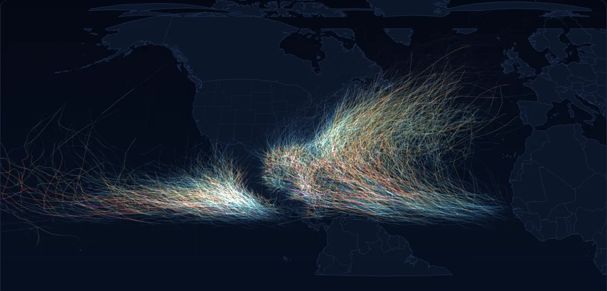

NOAA’s hurricane database holds 2,927 tropical storms and hurricanes: 1,773 in the Atlantic from 1851 to 2025 and 1,154 in the eastern and central Pacific from 1949 to 2025. 1,583 became hurricanes and 602 became major hurricanes, Category 3 or stronger. Florida is the most exposed state: 144 hurricanes have passed within 50 miles of it. The early record is incomplete, though: before satellites began watching in 1966, storms that were brief or stayed far out at sea were often missed.
The map below draws every one of those tracks, 87,631 positions in all, each segment colored by the storm’s strength at that moment. Pick a state or a city, or tap anywhere on the map, to see every storm that passed within 50 miles; drag across the timeline to pick a year or an era.
By Shawn Nafziger · Published · Data: NOAA National Hurricane Center HURDAT2, through the 2025 season
At least
Yearsto
1 of 5
What do 175 years of hurricanes look like?
This. Every line is one storm, 2,927 of them, colored by strength: cyan for tropical storms, then yellow through red to pink for Category 1 to 5 hurricanes. Atlantic storms form off Africa or in the Caribbean, run west, then curve north and east along the US coast as the westerlies catch them. Pacific storms form off Mexico and mostly run west into open ocean. Hover over any track for its name and year.
2 of 5
Where do the strongest hurricanes go?
These are the 602 storms that became major hurricanes, Category 3 or stronger: 342 in the Atlantic and 260 in the Pacific. The hottest colors pile up in the Caribbean, the Gulf of Mexico and off southern Mexico, over the warmest water. The strongest winds in either record belong to Pacific Hurricane Patricia (2015), 215 mph; the Atlantic’s strongest are Allen (1980) and Melissa (2025), both 190 mph.
3 of 5
How many storms did the old record miss?
Many, and mostly small ones. Highlighted here are Atlantic storms that lasted two days or less at tropical-storm strength. From 1878 to 1943, before aircraft flew into storms, the database lists 0.8 of these a year; from 2001 to 2025 it lists 4.5. Researchers trace most of that jump to better detection, not more storms: ships and coastlines saw few brief storms, satellites (from 1966) see all of them. Longer-lived storms rose less, from 7.6 to 11.8 a year, and estimates suggest up to about three hurricanes a year went unrecorded in the earliest decades.
4 of 5
How often do hurricanes reach Hawaii?
Rarely. Since 1949, 23 storms in any stage have passed within 50 miles of the islands, 10 of them at tropical-storm strength or more, and only 5 as hurricanes: Dot (1959), Iwa (1982), Iniki (1992), the only major hurricane, Douglas (2020) and Hone (2024). Most Pacific hurricanes weaken over cooler water before they get there. The Pacific record before 1971 is thin, too: it lists 4.1 hurricanes a year from 1949 to 1970 and 9.3 a year since.
5 of 5
How many have passed near you?
In Florida, 349 storms have passed within 50 miles in some stage, 322 of them at tropical-storm strength or more and 144 as hurricanes; 58 were major hurricanes.Pick any state or city above, or tap the map, to see your own count; the chips under the map list the strongest.

DepressionPost-tropicalTap a category to show only storms that reached it.
Lasted two days or less at tropical-storm strengthLasted longer
Storms shown
—
Hurricanes
—
Major hurricanes
—
Strongest
—
Strongest storms shown
How many storms are in the hurricane record?
2,927 tropical storms and hurricanes, through the 2025 season, or 3,266 systems in all once tropical depressions that never grew into storms are counted. The Atlantic list starts in 1851 and the eastern and central Pacific list in 1949; both are kept by NOAA’s National Hurricane Center as HURDAT2, and both were last updated Feb. 27, 2026. Wind speeds are 1-minute sustained winds, rounded as the National Hurricane Center rounds them.
The two records side by side. A major hurricane is Category 3 or stronger.
Atlantic
Eastern and central Pacific
Years in the record
1851–2025 (175 seasons)
1949–2025 (77 seasons)
Tropical storms and hurricanes
1,773
1,154
Hurricanes (74 mph or more)
980
603
Major hurricanes (Category 3+, 111 mph or more)
342
260
Category 5 (157 mph or more)
45
24
Strongest winds
Melissa (2025) and Allen (1980): 190 mph
Patricia (2015): 215 mph
Lowest pressure
Wilma (2005): 882 mb
Patricia (2015): 872 mb
Busiest season
2020: 30 storms, 14 hurricanes
1992: 27 storms, 16 hurricanes
Longest at tropical-storm strength or more
Unnamed (1899): 27.9 days
John (1994): 28.8 days
Which states get the most hurricanes?
Florida, by a wide margin: 144 hurricanes have passed within 50 miles of it since 1851, 58 of them major. Louisiana, North Carolina and Texas follow. The counts include storms that brushed the coast without making landfall, and the first column counts every stage, including depressions and the post-tropical remnants that carry rain far inland; that’s how Indiana logs 43 storms. “Strongest nearby” is the highest wind recorded within 50 miles of the state.
Storms whose center passed within 50 miles of each state or territory, 1851–2025 (Hawaii: 1949–2025).
State
Any stage
Tropical storm+
Hurricanes
Major
Strongest nearby
Florida
349
322
144
58
Unnamed (1935), 185 mph
Louisiana
177
160
79
26
Camille (1969), 175 mph
North Carolina
259
188
76
13
Helene (1958), 140 mph
Texas
161
140
73
25
Unnamed (1880), 150 mph
South Carolina
210
146
53
12
Helene (1958), 150 mph
Georgia
219
164
50
11
Michael (2018), 155 mph
Alabama
167
127
49
15
Michael (2018), 150 mph
Mississippi
147
114
45
10
Camille (1969), 175 mph
Puerto Rico
87
78
41
15
Irma (2017), 175 mph
U.S. Virgin Islands
71
64
34
15
Irma (2017), 180 mph
Virginia
165
94
26
0
Unnamed (1879), 110 mph
Massachusetts
113
63
22
5
Gerda (1969), 120 mph
New York
105
56
15
3
Unnamed (1938), 120 mph
Maryland
112
56
14
0
Unnamed (1879), 105 mph
Connecticut
73
45
13
3
Unnamed (1938), 120 mph
Rhode Island
67
40
13
3
Unnamed (1869), 115 mph
New Jersey
73
42
11
0
Unnamed (1944), 110 mph
New Hampshire
64
32
10
0
Carol (1954), 105 mph
Delaware
72
40
7
0
Unnamed (1879), 100 mph
Maine
85
32
7
0
Unnamed (1869), 105 mph
Hawaii
23
10
5
1
Iniki (1992), 135 mph
Pennsylvania
84
35
4
0
Unnamed (1878), 90 mph
Vermont
42
17
3
0
Unnamed (1938), 100 mph
West Virginia
67
17
2
0
Unnamed (1878), 95 mph
Arkansas
88
28
1
0
Unnamed (1909), 75 mph
Washington, D.C.
35
14
1
0
Unnamed (1878), 95 mph
Tennessee
97
21
0
0
Hugo (1989), 70 mph
Missouri
55
7
0
0
Unnamed (1888), 60 mph
Kentucky
69
7
0
0
Unnamed (1888), 60 mph
Oklahoma
39
5
0
0
Unnamed (1900), 55 mph
Ohio
49
5
0
0
Unnamed (1888), 50 mph
Arizona
12
4
0
0
Nora (1997), 60 mph
New Mexico
11
2
0
0
Unnamed (1929), 50 mph
California
9
2
0
0
Nora (1997), 60 mph
Indiana
43
1
0
0
Unnamed (1888), 55 mph
Kansas
9
1
0
0
Unnamed (1900), 40 mph
Illinois
47
1
0
0
Unnamed (1941), 40 mph
Iowa
4
1
0
0
Unnamed (1900), 40 mph
Michigan
23
1
0
0
Connie (1955), 45 mph
Alaska
1
0
0
0
–
Minnesota
1
0
0
0
–
Wisconsin
6
0
0
0
–
Nebraska
3
0
0
0
–
Nevada
2
0
0
0
–
Hurricanes that passed within 50 miles of Hawaii
Five since 1949, and one of them, Iniki, struck Kauai as a Category 4 on Sept. 11, 1992. The winds below are the strongest the record shows within 50 miles of the islands, read between the database’s six-hourly positions.
Storm
Strongest within 50 mi
Strength there
Iniki (1992)
135 mph
Category 4
Iwa (1982)
90 mph
Category 1
Douglas (2020)
90 mph
Category 1
Dot (1959)
90 mph
Category 1
Hone (2024)
85 mph
Category 1
How much of the old record is missing?
Some, and the gap is largest where storms were small, short or far from ships and land. Before 1944 storms were known only from ship logs and coastal reports; aircraft reconnaissance began that year and satellites in 1966, and modern satellite intensity estimates arrived in the 1970s. In the Atlantic, storms that lasted two days or less went from fewer than one a year in the late 1800s to about five a year since 2000, a jump researchers at NOAA attribute mainly to better detection. A 2021 study estimated that up to about three hurricanes a year may be missing from the earliest Atlantic decades. In the Pacific the record is considered reliable only from 1971. So a rising line in the table below is partly the ocean and partly the eyes on it.
Storms per decade in HURDAT2. “Short” means two days or less at tropical-storm strength or more. The 2020s cover 2020–2025.
Decade
Atlantic
Pacific
Storms
Hurricanes
Major
Short
Storms
Hurricanes
Major
Short
1851–59
53
39
9
19
–
–
–
–
1860–69
72
49
4
29
–
–
–
–
1870–79
75
55
14
7
–
–
–
–
1880–89
89
63
15
5
–
–
–
–
1890–99
82
50
16
7
–
–
–
–
1900–09
84
42
12
4
–
–
–
–
1910–19
61
37
14
4
–
–
–
–
1920–29
71
41
15
11
–
–
–
–
1930–39
115
52
22
19
–
–
–
–
1940–49 (Pacific from 1949)
104
53
19
19
6
2
0
4
1950–59
128
68
29
36
96
45
5
35
1960–69
115
64
23
26
107
39
2
33
1970–79
99
52
16
27
150
86
37
41
1980–89
93
52
17
23
186
100
46
44
1990–99
110
64
25
23
157
101
57
25
2000–09
151
74
36
46
160
72
29
49
2010–19
155
72
30
37
186
109
59
49
2020–25
116
53
26
34
106
49
25
30
How to read the map
Each line joins a storm’s recorded positions, usually every six hours, and each piece of line takes the color of the storm’s strength at its start: blue for a tropical depression, cyan for a tropical storm, then yellow, gold, orange, red and pink for hurricanes of Category 1 to 5. Gray marks the storm after it lost its tropical character. Where hundreds of tracks overlap, the colors stack up and glow.
“Within 50 miles” means the storm’s center passed within 50 miles of the place, or of any part of the state. A hurricane’s winds can reach well beyond that, and its rain much farther, so the counts are a measure of how often storms come close, not of damage.
How this was made, and what the record can’t tell you
The tracks are NOAA National Hurricane Center’s best-track database, HURDAT2: the Atlantic file for 1851–2025 and the Northeast and North Central Pacific file for 1949–2025, both released Feb. 27, 2026. Every position is drawn as recorded; nothing is smoothed or added. Strength categories follow the Saffir-Simpson scale applied to each position’s 1-minute sustained wind. Distances are measured from the storm’s center along the straight line between positions, sampled every five miles or so, and the wind “within 50 miles” is read along that line.
What the early record misses. Before satellites, a storm was recorded only if a ship, an island or a coast met it. Landsea and colleagues (Journal of Climate, 2010) found that the rise in Atlantic storm counts since the late 1800s comes mainly from very short-lived storms, which earlier observers rarely caught; Vecchi and Knutson (2008, 2011) used historical ship tracks to estimate how many storms and hurricanes were likely missed between 1878 and 1965, and Vecchi and colleagues (Nature Communications, 2021) extended the estimate back to 1851. Wind speeds before reconnaissance aircraft are estimates, often from damage or pressure, and many are rounded. In 1851–1877, 31 Atlantic storms are known from a single position, shown as dots. Tropical depressions that never became storms appear in the Atlantic list only from 1966 and in the Pacific list only from 1988. The Pacific record before 1971, when steady satellite pictures began, is sparse; the National Hurricane Center treats 1971 as the start of its more reliable record.
So compare eras with care: the map shows where storms were seen, which before the 1960s is not the same as where storms were.